Follow these steps to configure your automated Twitch-to-Discord stream alerts.
Once set up, Streamer.bot will automatically post a dynamic live notification when your broadcast begins, and it will seamlessly update to a summary wrap-up when your broadcast ends.
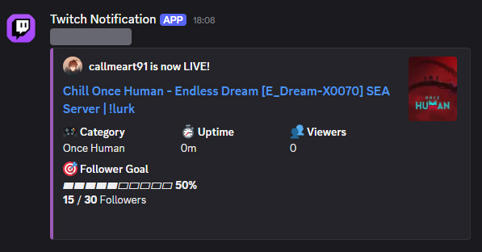
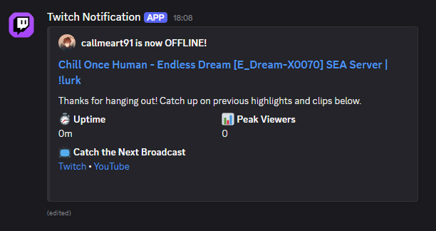
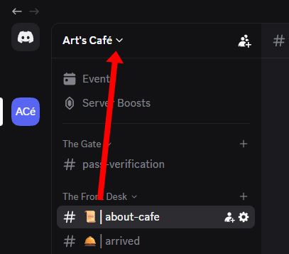
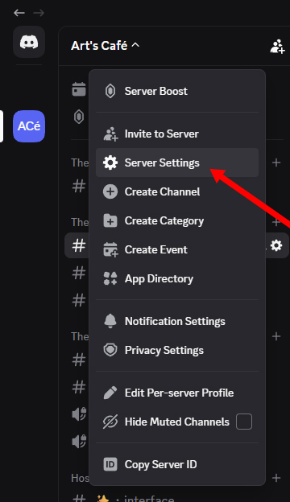
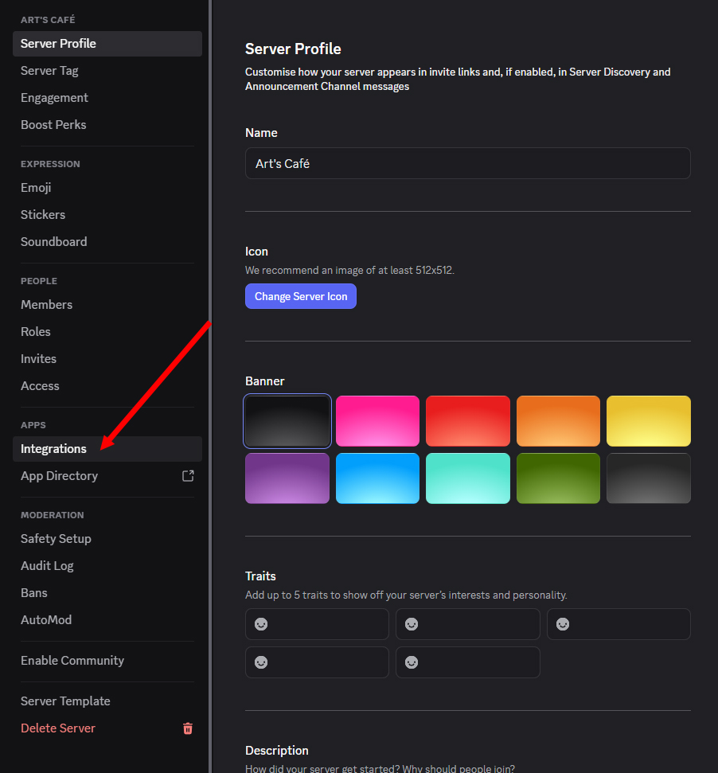
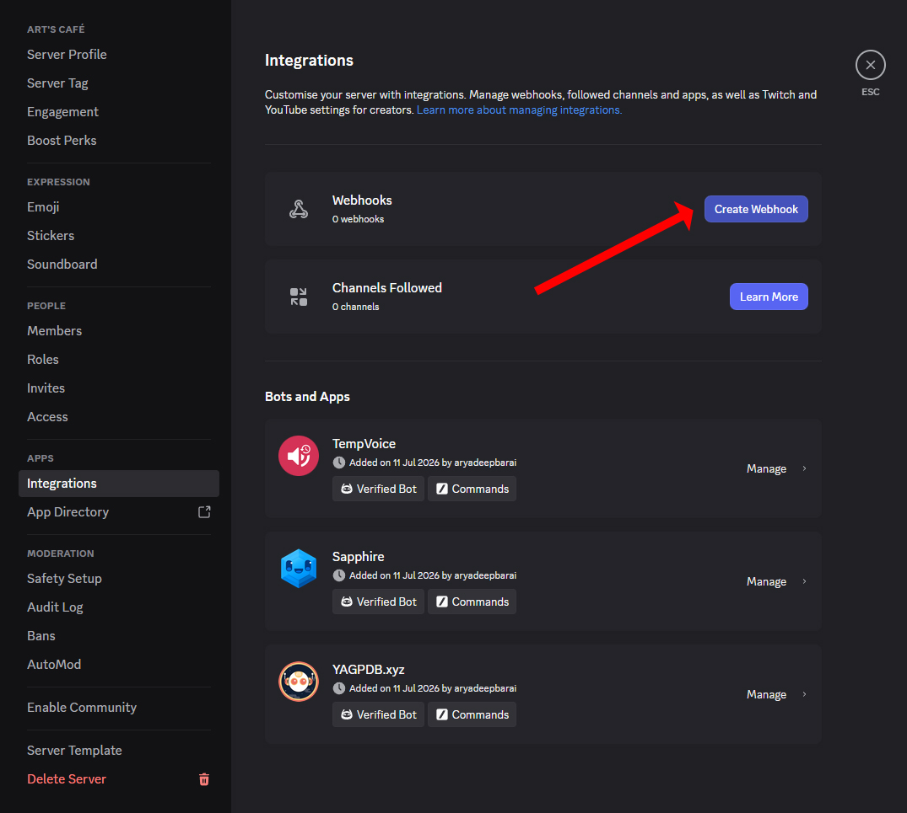
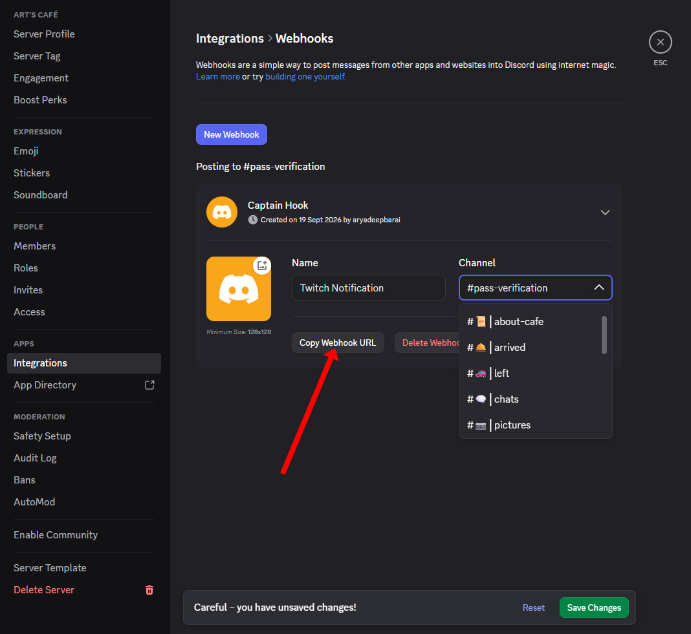
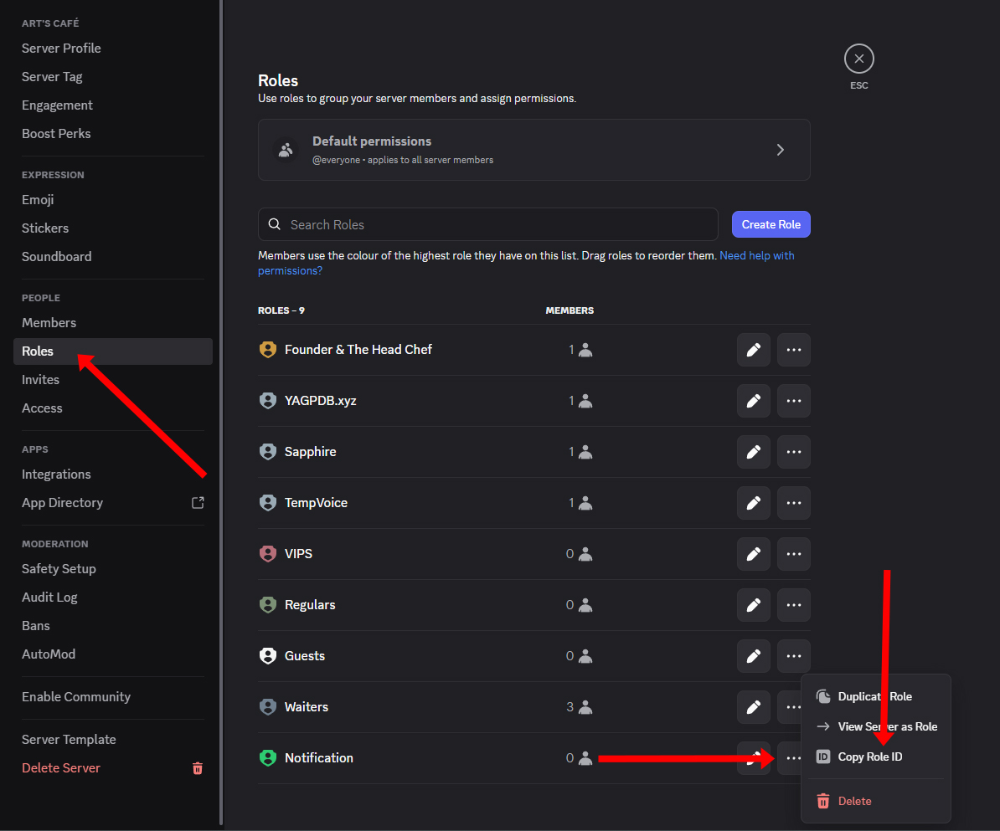
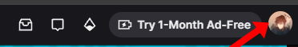
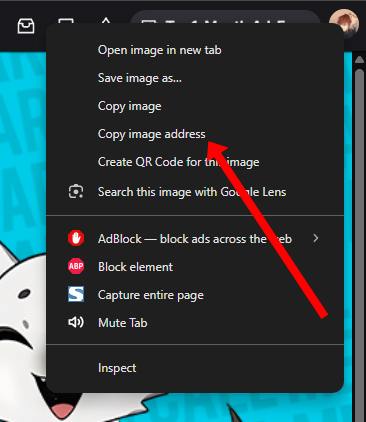
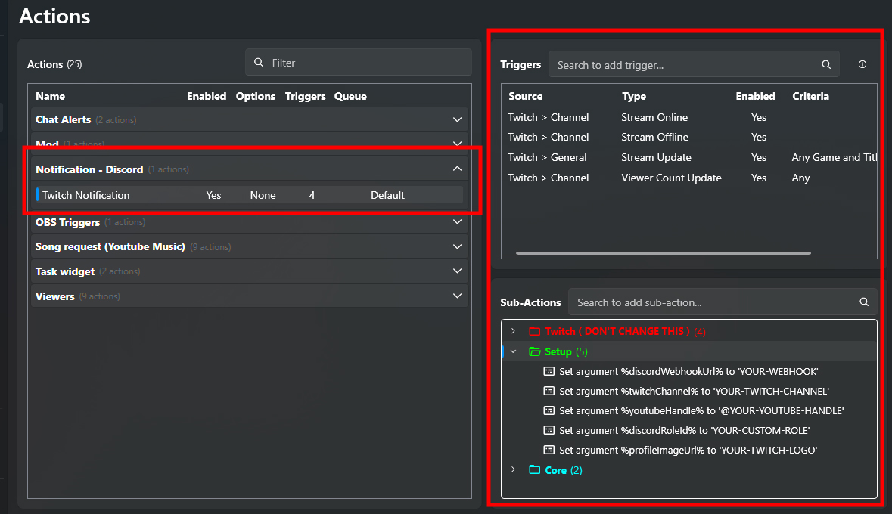
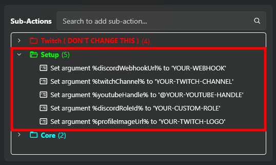